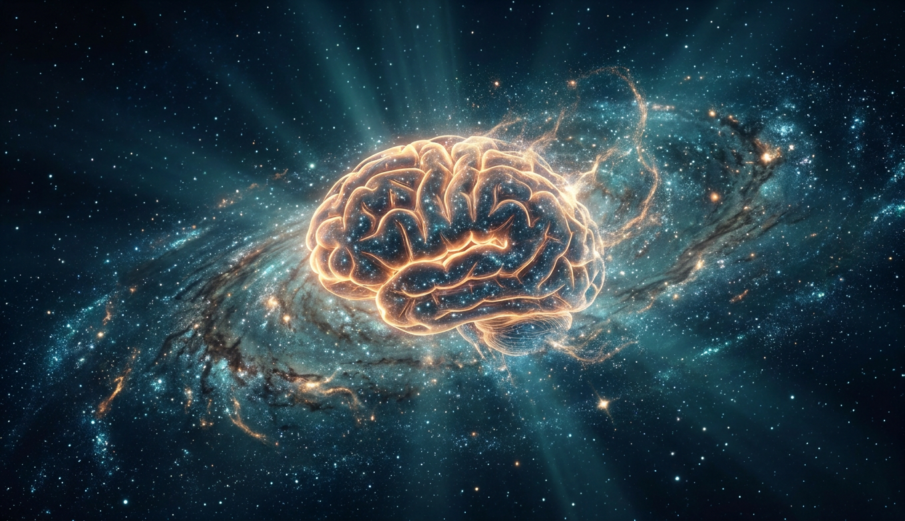
В мозге примерно столько же нейронов, сколько звёзд в Млечном Пути. У каждого - до 10 тысяч связей. Общая длина аксонов - 150 тысяч километров. И всё это потребляет меньше, чем лампочка в холодильнике.
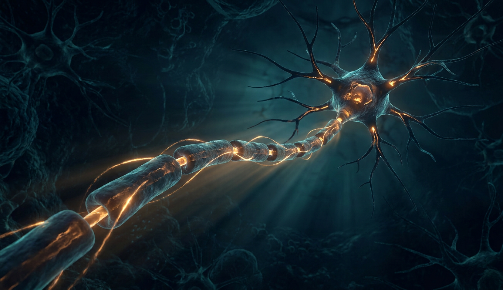
Батарейка на 70 милливольт, провод из жира, переключатель из белка. Потенциал действия - самый изученный процесс в биологии и единственный сигнал, которым мозг вообще умеет пользоваться.
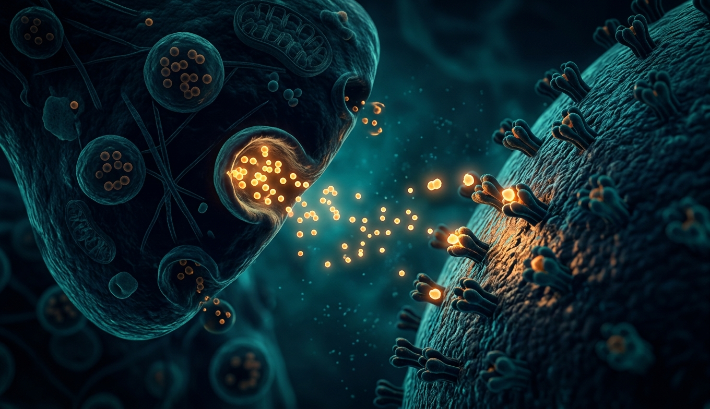
Между двумя нейронами - щель в 20 нанометров. Импульс через неё не перепрыгнет. Вместо этого - пузырёк молекул, рецептор, и полмиллисекунды задержки. Именно тут работают все психоактивные вещества, антидепрессанты и обучение.
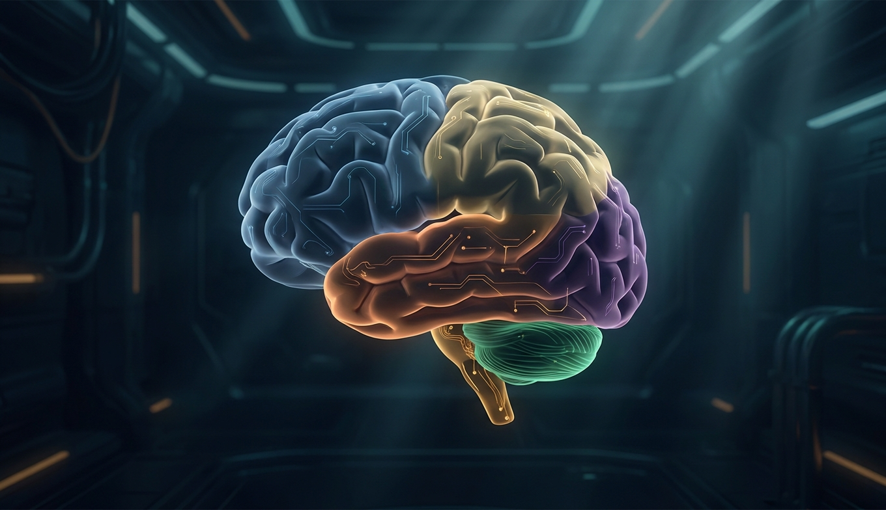
Три этажа эволюции в одном черепе: ствол ящерицы, лимбика млекопитающего, кора примата. Каждый отдел - своя эпоха, свои задачи и своя цена при поломке.
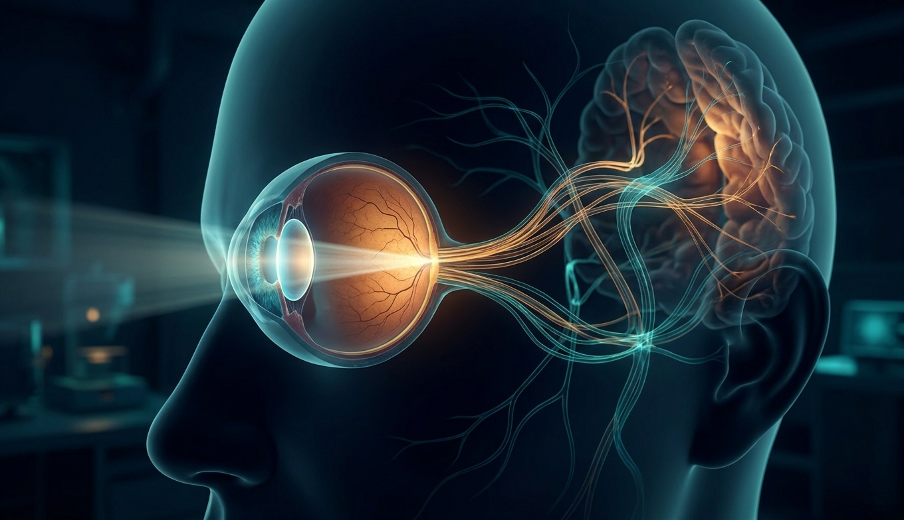
Сетчатка отдаёт 10 мегабит в секунду, и это всё, что есть. Остальное - цвет, глубина, постоянство объектов, слепое пятно, которого ты не видишь - мозг дорисовывает сам. Восприятие - это управляемая галлюцинация, сверенная с сенсорами.
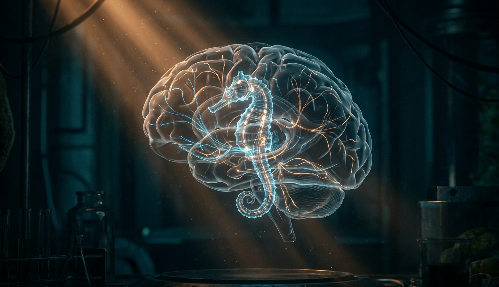
В мозге нет адресов и файлов. Воспоминание - это паттерн синапсов, который при каждом вызове перезаписывается и слегка меняется. Гиппокамп записывает, кора хранит, сон переносит. Пациент, потерявший гиппокамп в 1953-м, объяснил всё это лучше любой теории.
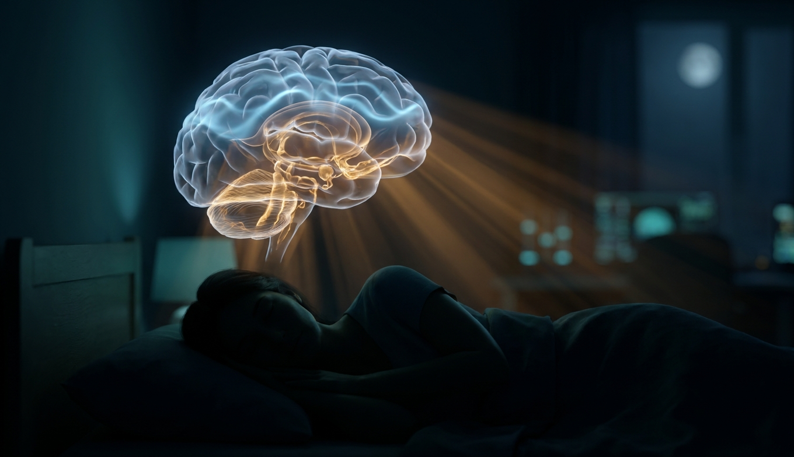
Эволюция не оставила бы животное беззащитным на 8 часов в сутки без крайней необходимости. Сон есть у всех - от мухи до кита. За ночь мозг промывает себя, переписывает память и подрезает синапсы. Без него крыса умирает за 2-3 недели - раньше, чем без еды.
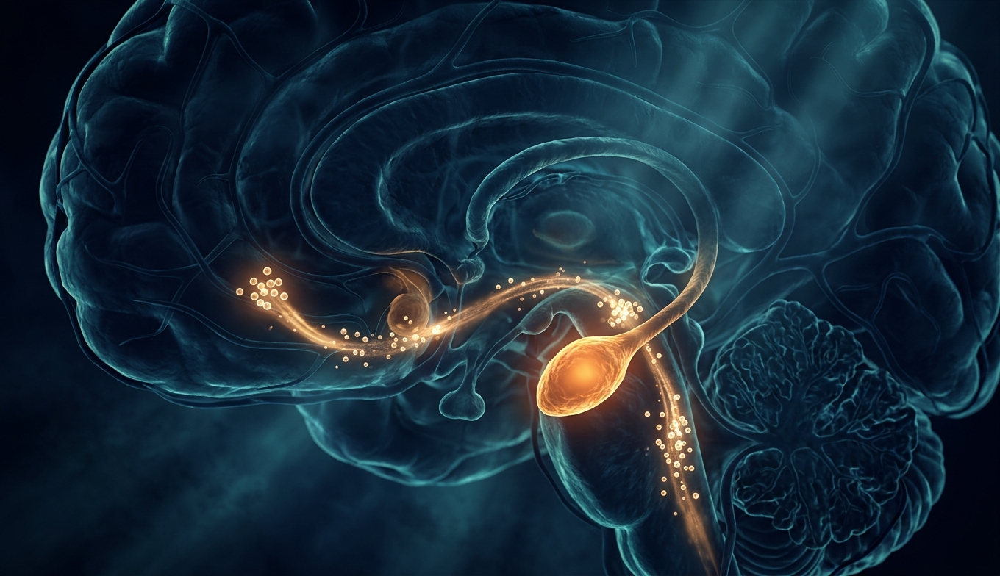
Амигдала решает за 12 миллисекунд - быстрее, чем ты осознал, что увидел. Дофамин обещает, а не награждает. Стресс полезен на 20 минут и разрушителен на 20 месяцев. Все зависимости - от героина до ленты соцсети - работают через одну и ту же схему из трёх узлов.
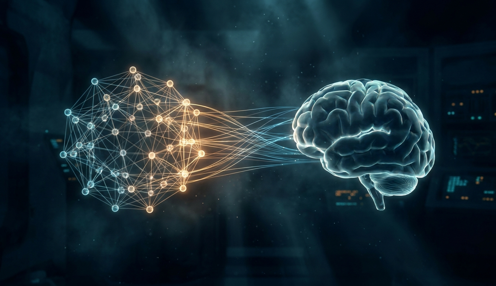
Искусственные нейросети списаны с мозга в 1943-м и с тех пор обогнали его в шахматах, го и переводе. При этом ни одна не объясняет, почему у тебя есть ощущение красного, а у неё - только число 0.87. И работают они совсем не так, как думали.
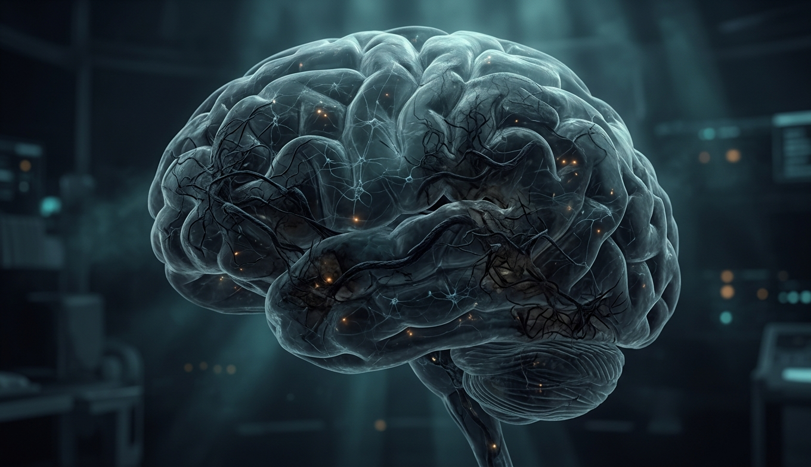
Инсульт убивает 2 миллиона нейронов в минуту. Альцгеймер начинается за 20 лет до первого симптома. Депрессия - не «мало серотонина». Каждая болезнь мозга - это лекция о том, как он устроен, прочитанная самым жестоким способом.
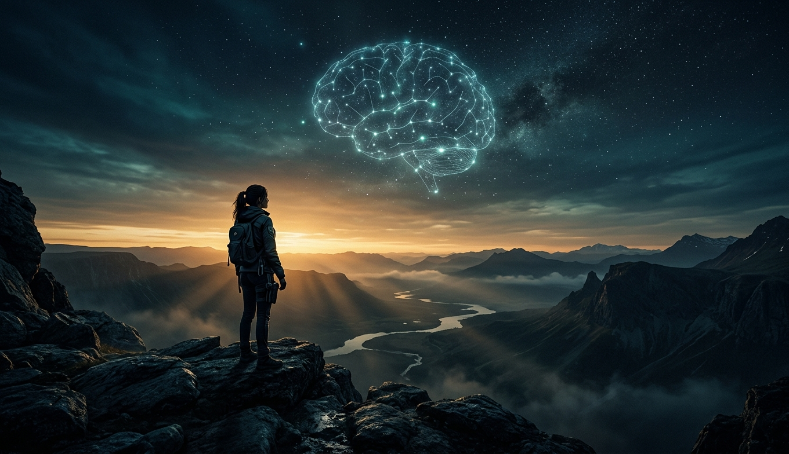
Фотоны с экрана → 120 миллионов палочек → миллион аксонов → таламус → затылок → края, формы, буквы → височная доля → слова → смысл. 150 миллисекунд, 20 ватт. Потом гиппокамп поставит на это указатель, ночью прокрутит в 20 раз быстрее и перепишет в кору - и через год ты вспомнишь не этот слайд, а его пересказ, слегка отредактированный.